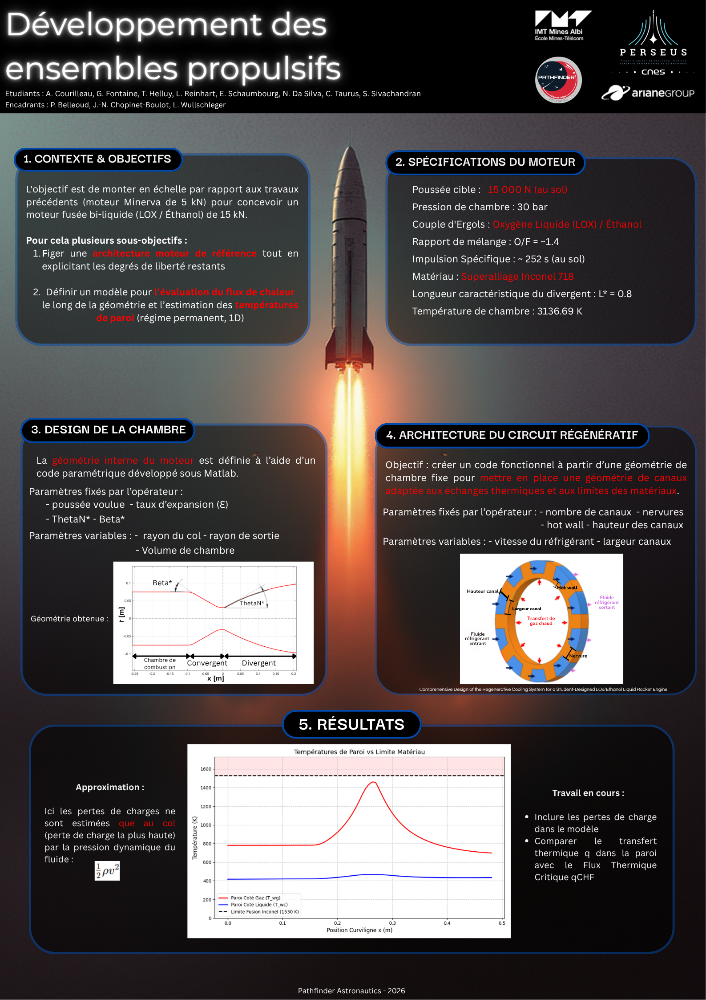
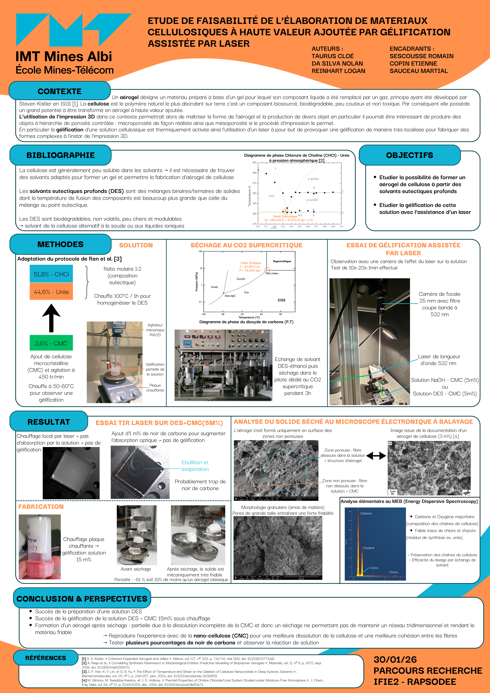

Nolan Da Silva
Engineering Student | Future Faculty Researcher in Materials & Mechanics
Engineering Student | Future Faculty Researcher in Materials & Mechanics
Browse below a selection of my academic and research projects, as well as my professional documents in materials engineering, additive manufacturing, and numerical simulation.
View or download my CV (French version).
View or download my CV (English version).
View or download my technical work and projects.
Research Assistant at LAMSI (ÉTS Montréal): Study of Grading in NiTi Lattice Structures.

Design optimization of a combustion chamber for the PERSEUS project.

Feasibility study on the fabrication of cellulosic materials via laser-assisted gelation.